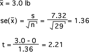

Assumptions about population
The theory behind the t-test is based on the data being a random sample from a population with a normal distribution. For samples from a normal population with mean µ0,

has a t distribution with n - 1 degrees of freedom. To test whether the population mean is really µ0, this test statistic and t-distribution are used to find the test's p-value.
If the population distribution is not normal, the test statistic does not have exactly a t distribution — its exact shape depends on the shape of the population distribution. However the Central Limit Theorem shows that the sample mean,  , has approximately a normal distribution if the sample size, n, is large enough and the t-test statistic also has approximately a t-distribution.
, has approximately a normal distribution if the sample size, n, is large enough and the t-test statistic also has approximately a t-distribution.
The p-value from a t-test can be used for testing the mean of non-normal populations, provided n is fairly large.
This does not hold for small samples.
The t-test should not be used with small samples if the population distribution is clearly non-normal.
Weight gain for anorexic girls
A study investigated the effectiveness of cognitive behavioural therapy in getting anorexic girls to gain weight. The stacked dot plot below shows the weight gains of the 29 girls in the study who received this treatment. (Negative values correspond to girls who lost weight during the study.)

We are interested in testing whether the mean weight gain is positive:
H0 : µ ≤ 0
HA : µ > 0
The distribution of weight losses seems a little skew with a long tail towards positive weight gains, but the sample size, n = 29, is fairly large, so the p-value from a t-test will give a good assessment of these hypotheses.

Since this is a 1-tailed test and the high values of the test statistic suggest that HA holds, the p-value is the upper tail area of a t-distribution (28 d.f.) above 2.21,
p-value = 0.036
From this we would conclude that there is moderately strong evidence that the average weight gain is above zero.
Smaller data set
On the other hand, if we had only used 8 girls in our study and their weight losses were as shown below:
then the small sample size and apparent skewness of the distribution — most girls did not change weight but a small number had large weight gains — means that we should not use a t-test to compare the hypotheses.